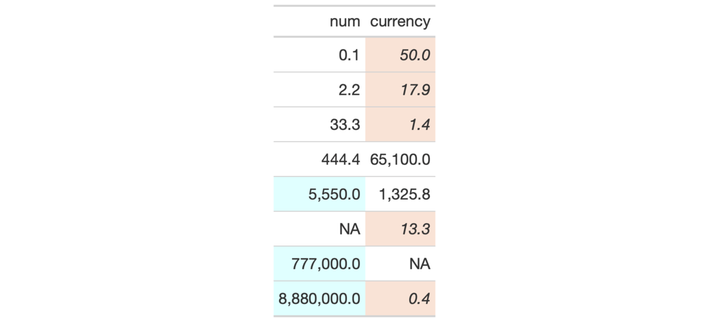
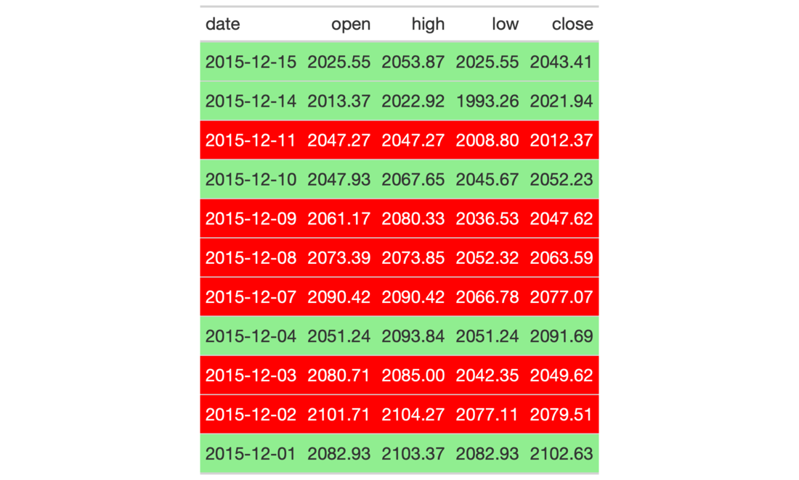
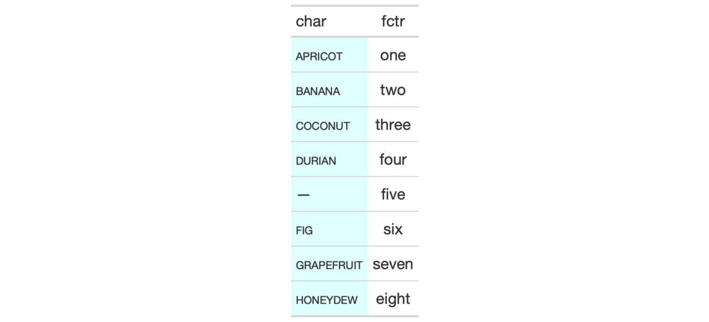

| tab_style {gt} | R Documentation |
With the tab_style() function we can target specific cells and apply styles
to them. This is best done in conjunction with the helper functions
cell_text(), cell_fill(), and cell_borders(). At present this function
is focused on the application of styles for HTML output only (as such, other
output formats will ignore all tab_style() calls). Using the aforementioned
helper functions, here are some of the styles we can apply:
the background color of the cell (cell_fill(): color)
the cell's text color, font, and size (cell_text(): color, font,
size)
the text style (cell_text(): style), enabling the use of italics or
oblique text.
the text weight (cell_text(): weight), allowing the use of thin to
bold text (the degree of choice is greater with variable fonts)
the alignment and indentation of text (cell_text(): align and
indent)
the cell borders (cell_borders())
tab_style(data, style, locations)
data |
A table object that is created using the |
style |
a vector of styles to use. The |
locations |
the cell or set of cells to be associated with the style.
Supplying any of the |
An object of class gt_tbl.



2-8
cell_text(), cell_fill(), and cell_borders() as helpers for
defining custom styles and cells_body() as one of many useful helper
functions for targeting the locations to be styled.
Other Create or Modify Parts:
tab_footnote(),
tab_header(),
tab_options(),
tab_row_group(),
tab_source_note(),
tab_spanner_delim(),
tab_spanner(),
tab_stubhead()
# Use `exibble` to create a gt table;
# add styles that are to be applied
# to data cells that satisfy a
# condition (using `tab_style()`)
tab_1 <-
exibble %>%
dplyr::select(num, currency) %>%
gt() %>%
fmt_number(
columns = c(num, currency),
decimals = 1
) %>%
tab_style(
style = list(
cell_fill(color = "lightcyan"),
cell_text(weight = "bold")
),
locations = cells_body(
columns = num,
rows = num >= 5000
)
) %>%
tab_style(
style = list(
cell_fill(color = "#F9E3D6"),
cell_text(style = "italic")
),
locations = cells_body(
columns = currency,
rows = currency < 100
)
)
# Use `sp500` to create a gt table;
# color entire rows of cells based
# on values in a particular column
tab_2 <-
sp500 %>%
dplyr::filter(
date >= "2015-12-01" &
date <= "2015-12-15"
) %>%
dplyr::select(-c(adj_close, volume)) %>%
gt() %>%
tab_style(
style = cell_fill(color = "lightgreen"),
locations = cells_body(
rows = close > open)
) %>%
tab_style(
style = list(
cell_fill(color = "red"),
cell_text(color = "white")
),
locations = cells_body(
rows = open > close)
)
# Use `exibble` to create a gt table;
# replace missing values with the
# `fmt_missing()` function and then
# add styling to the `char` column
# with `cell_fill()` and with a
# CSS style declaration
tab_3 <-
exibble %>%
dplyr::select(char, fctr) %>%
gt() %>%
fmt_missing(everything()) %>%
tab_style(
style = list(
cell_fill(color = "lightcyan"),
"font-variant: small-caps;"
),
locations = cells_body(columns = char)
)